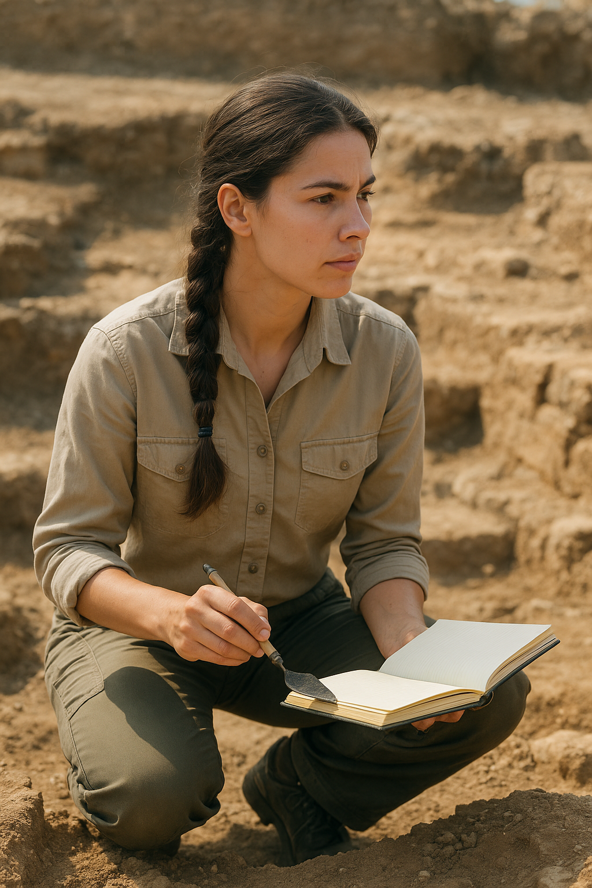
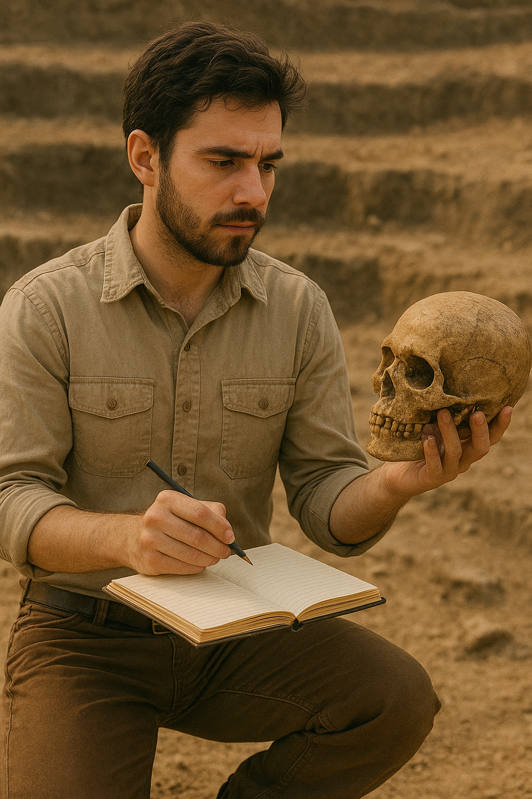
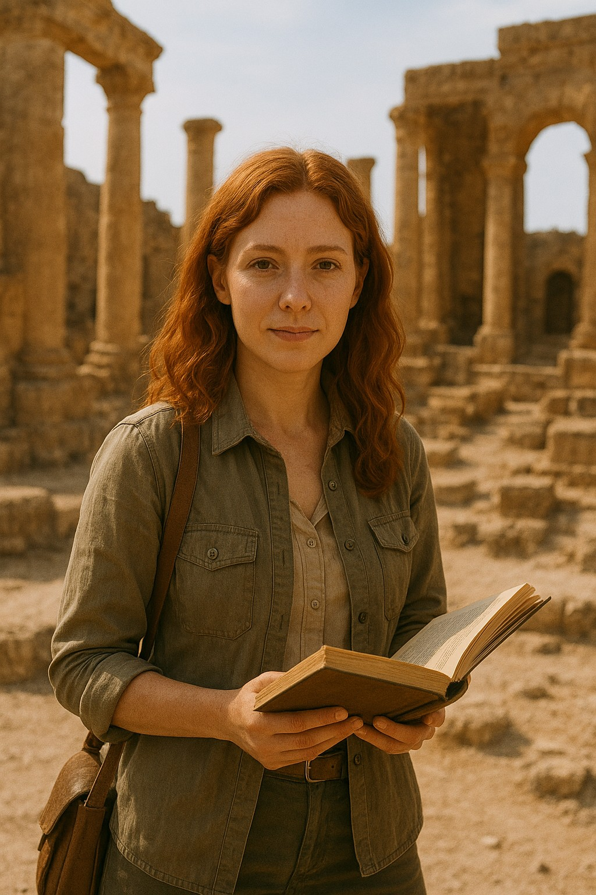

Dr. Ruby Nile
Archaeologist — Artifact Specialist
Bio: Dr. Ruby Nile (PhD, University of Stanford) is a field archaeologist who specializes in artifact remenents. She takes lead in her extractions of priceless artifacts, where specialized photography instruments are used. She also unvieled her most recent discovery of cleopatras tomb.
Role: Senior Field Archaeologist — extraction lead, artifact inspector, artifact researcher.
Special Considerations: Discoveries of multiple historical sites and artifacts; Bilingual in Russian/ English .

Dr. Adam Jones
historical Anthropologist — Anthropology & Paleopathology
Bio: Dr. Adam Jones (PhD, University of California) studies skeletal remenents of deaceased historical figures and animals. He uses various forms of equipment and software to pinpoint time of death and lifestyles. Works closly with Dr. Nile.
Role: Scientist — uses ethical methods whilst researching civilivations
Special Considerations: Ethics award, Ted talk on anthropology

Dr. Mary Sand
Historian & Mythographer — Studies anchient Mythology
Bio: Dr. Mary Sand (PhD, University of Boston) uncovers and studies anchient mythology among historical civilivations
Interpretive Method: Uses storytelling among various associated artifacts to represent a story.
Special Considerations: Mythology Merit in the research department.
This is a fictitious website created purely for academic purposes. The images were generated with AI and curated, edited, and validated by a human.